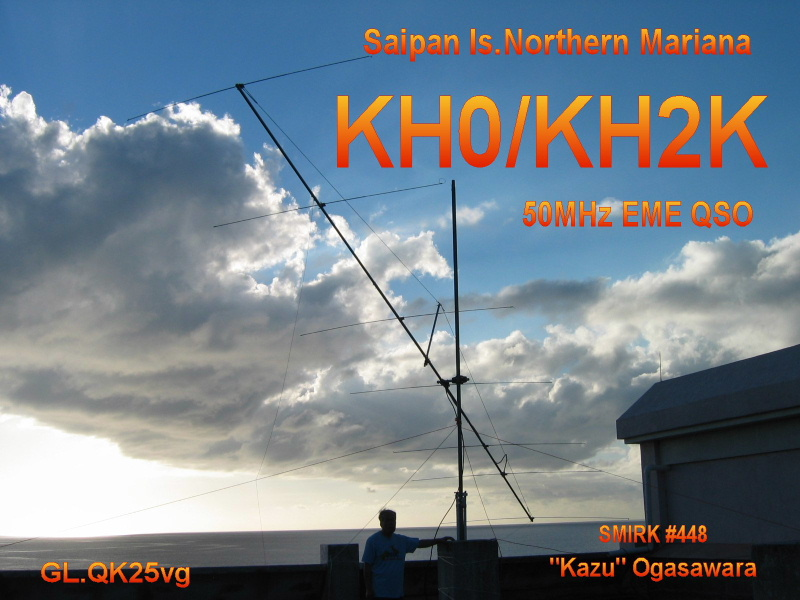

|
| JA1RJU EME QSO & Report | QRV Entities and Band |
|---|---|
 50MHz EME 再開 50MHz EME 再開 |
 VHF/UHF Band EME VHF/UHF Band EME |
| 50MHz 1KW EME (Kasumigaura,Ibaraki) |
JA1RJU/50MHz |
 144/432MHz QRP EME (Mitaka, Tokyo) 144/432MHz QRP EME (Mitaka, Tokyo) |
** Real QRP(50W ) EME **JA1RJU/144/432MHz |
 EME DX Pedition (Saipan Is.) |
KH0/KH2K (50MHz) |
 EME DX Pedition (Philippines Spratly) EME DX Pedition (Philippines Spratly) |
DX0JP (50/144MHz) |
 EME DX Pedition (Philippines) EME DX Pedition (Philippines) |
DZ1JP (50/144MHz) |
 EME DX Pedition (Philippines) EME DX Pedition (Philippines) |
DX0EME (144/432MHz)DX1F (432MHz) |
 EME DX Pedition (Ogasawara Is.) EME DX Pedition (Ogasawara Is.) |
** 200W CW EME **7J1YAM (144MHz) |
** EME QSL Direct to Home QTH **
Callsign: JA1RJU
KAZU OGASAWARA
4-13-12,KAMIRENJAKU, MITAKA
TOKYO 181-0012 JAPAN
** E-Mail **